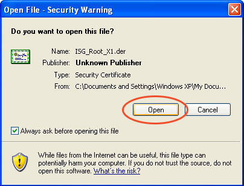
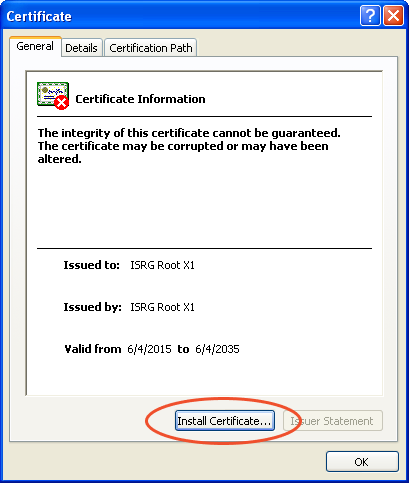
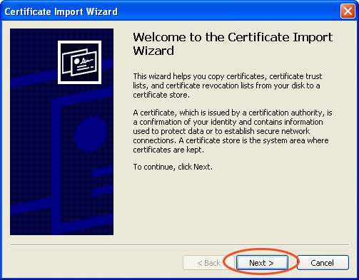
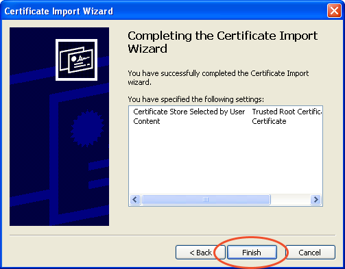
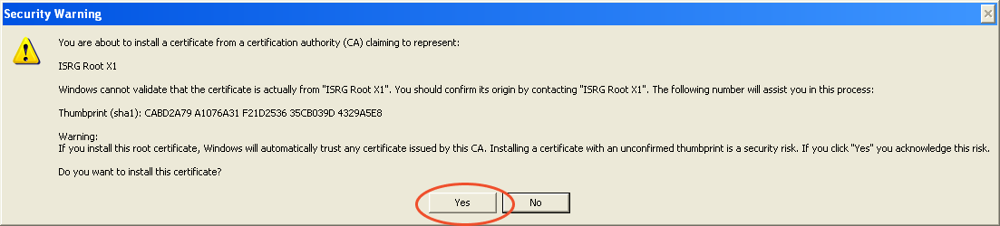
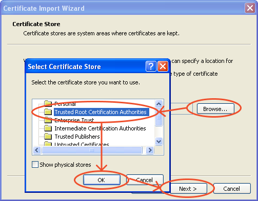

Is the internet broken?
Unknown.
How do i fix it?
The best solution is to install a newer version of your operating system and browser. If that’s not possible, select your platform below for instructions:
What’s up?
Most websites on the Internet use TLS (also know as SSL) to secure your connection and data. This uses “certificates” that are signed by trusted authorities. The list of authorities is stored on your computer and usually updated as part of the operating system.
The most popular TLS authority right now is Let’s Encrypt, who issues certificates for free with the mission to secure the Internet. On old devices Let’s Encrypt itself relies on an even older authority to verify their trustworthiness. This authority’s certificate expired in September 2021.
As a result, users of old devices will see a warning about an “untrusted connection” on a large number of websites. It’s not recommended to ignore this warning — rather, you should fix the underlying problem.
Instructions
for Windows XP
1. Download the certificate file.
It’s called “ISRG Root X1” — ISRG is the organization behind Let’s Encrypt.
2. Pictures






4. Check results. Reload the page to see if the check completes successfully now.
If this didn’t work, please email help@browser.repair and we’ll try to figure it out when we can.
Please remember this is a volunteer effort.